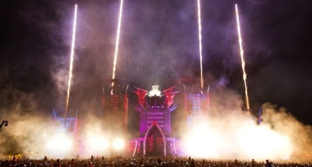

ID&T speaks out on the Defqon.1 revolution


Punter anticipation has reached critical levels for this weekend’s Defqon.1 Festival at the outer edges of Sydney, for what will be the fourth edition of the event on Australian soil. Regular attendees will already known what kind of spectacle Q-dance are capable of, while many will also know the brand is part of Holland’s famous ID&T family, which hosts packed Q-dance stages annually at events like Mysteryland and Tomorrowland. Co-founder Irfan van Ewijk (the ‘I’ in ID&T) spoke to ITM about some of the mystique behind the Defqon.1 brand.
For many partygoers in the Australian festival scene, the first installment in 2009 was an unforgettable moment. “For the people who are exploring these experiences for the first time, it’s always extra elevating,” van Ewijk told ITM. “And it’s also always promising, in terms of for setting the standard for the editions in the years to come.”
ID&T globally has enjoyed a particularly strong year in 2012, with enduring brands like Sensation reaching new markets across Asia, Belgium’s Tomorrowland establishing itself as one of the world’s premier events, as well as the news revealed by VIBE Magazine a few weeks ago that Mysteryland would be venturing into America in the near future. However, van Ewijk singles out the Q-dance brand as having a particularly strong appeal to the punters.
“If you look at the Q-dance portfolio, it’s mainly driven through the music, the public, and the importance of the interaction between the two,” he said of the different events, which includes the likes of Qlimax, X-Qlusive, last weekend’s QBASE that took place in western Germany, in addition to the Defqon.1 Festival in both Holland and Australia every year.
It’s the strength of the energy, the community and the armosphere that is the drawcard for many who attend the Defqon.1 Festival, rather than solely the DJs on the lineup.
“These artists, although they are very motivated to join the ranks of the other DJs worldwide… the events themselves are not driven by the popularity of big names, of $200-300,000 costing talent. It’s purely about the feelings that are being created at the event, and the gathering of like-minded people who are enjoying the same scenery and music.”
Hard dance devotees will get to experience it first hand once again when the Defqon.1 Festival returns to the International Regatta Centre in Penrith this weekend.